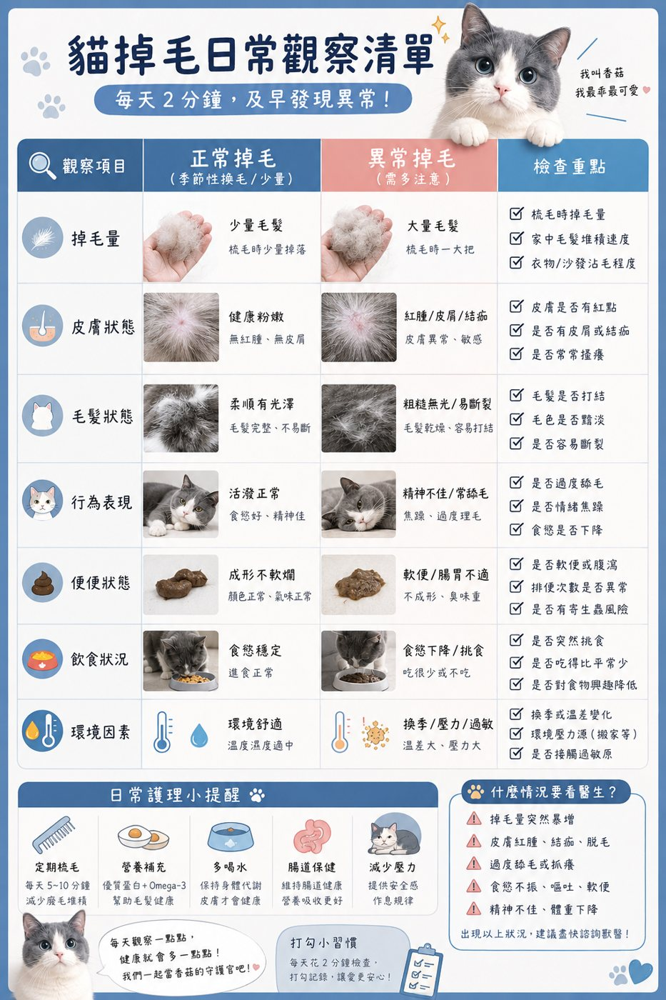
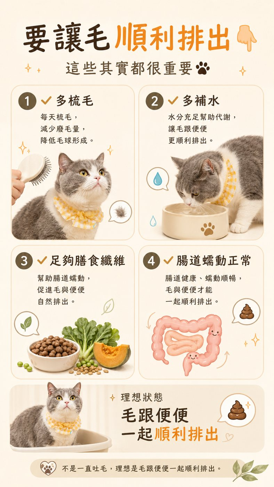

掉毛觀察表正常換毛 vs 要注意的掉毛
SHEDDING CHECK
掉毛很正常
掉毛很正常
掉法不對才要注意
不用數掉了幾根 ~ 看皮膚、看毛、看牠的精神，每天 2 分鐘就夠
七項對照梳毛頻率就醫訊號
01
為什麼貓會一直掉毛
先知道哪些是正常的
貓的毛本來就會一直汰舊換新，舊毛掉下來、新毛長出來，這是正常的代謝。
一年裡面掉最多的是春天和秋天的換毛季 ~ 春天換掉厚的冬毛、秋天長出保暖的底毛。
但室內貓常常一年四季都在掉，因為家裡有冷氣、暖氣和燈光，身體分不太清楚現在是什麼季節，這也是常見的狀況。
02
七個項目 對照看
左邊是正常 右邊是要多注意

🔍 點圖片可以放大看🌿正常換毛梳毛時掉一些 ~ 皮膚粉嫩、毛有光澤、精神食慾都好
⚠️要多注意梳一下就一大把 ~ 皮膚紅、有皮屑或結痂、毛粗糙易斷
👀最容易被忽略的：牠的行為一直舔同一個地方、舔到毛變短變禿，常常不是皮膚本身的問題，可能是壓力、過敏或那個位置不舒服 ~ 這種要找原因，不是多梳幾次就好
03
梳毛 一週要梳幾次
長毛短毛不一樣
| 短毛貓 | 長毛貓 | |
|---|---|---|
| 平常 | 一週 2～3 次 | 每天梳 |
| 換毛季 | 每天梳 | 每天梳 ~ 底層也要梳到 |
| 工具 | 橡膠梳、針梳 | 排梳 ＋ 針梳 |
| 重點 | 順著毛 輕輕梳 | 先梳開結 再整理 打結不要硬扯 |
梳毛的目的不只是讓家裡少一點毛 ~ 梳掉的廢毛越多，牠舔毛時吞進肚子的就越少。
順便每次梳毛的時候摸一下全身，有沒有腫塊、碰了會躲的地方，很多問題是這樣提早發現的。
04
讓毛順利排出去
不是一直吐毛球才正常

🔍 點圖片可以放大看1
多梳毛從源頭減少吞進去的毛
2
多補水水喝夠，毛跟便便才好一起排出 ~ 濕食也是補水的好方法
3
足夠的膳食纖維幫助腸道蠕動
4
腸道蠕動正常理想狀態是毛跟著便便一起出來，而不是一直用吐的
偶爾吐一次毛球很常見 ~ 但如果一週吐好幾次、或吐不出來一直乾嘔，就不只是毛的問題了，要帶去給醫生看。
05
這些情況 要看醫生
!
局部禿一塊、圓形脫毛
特別是邊緣有皮屑或紅紅的 ~ 可能是貓癬，會傳染給其他貓和人
!
皮膚紅腫、結痂、一直抓
抓破容易感染 ~ 先戴頭套再去醫院
!
一直舔同一個地方
舔到毛變短、皮膚露出來 ~ 要找出是壓力、過敏還是疼痛
!
掉毛 ＋ 食慾變差、變瘦、精神不好
掉毛只是表面 ~ 身體可能有其他狀況
!
掉毛量突然暴增
短時間內明顯變多，比一直都很會掉更需要檢查
NEXT
🍄認識貓癬禿一塊、有皮屑 ~ 先看這篇›
💩便便觀察表毛有沒有順利排出 看便便就知道›
✅照護頻率清單梳毛、剪指甲、刷牙 多久一次›
🍄想知道香菇平常怎麼吃、怎麼保養？看香菇爸的日常照護清單›
還可以看這些
🐱 還是不確定你家適合哪種照護方式？
加入護貓社群 每週跟香菇爸一起學養貓
💬拍下來問香菇爸不確定是正常換毛還是要注意 ~ 拍照傳給我看看↗
加入護貓社群 每週跟香菇爸一起學養貓
關於這一頁
這是一份幫助你「觀察」與「描述」的工具，不能取代獸醫診斷
掉毛的原因很多，同樣的樣子也可能是不同原因，皮膚有異常請先就醫
© 2026 香菇爸・原創內容